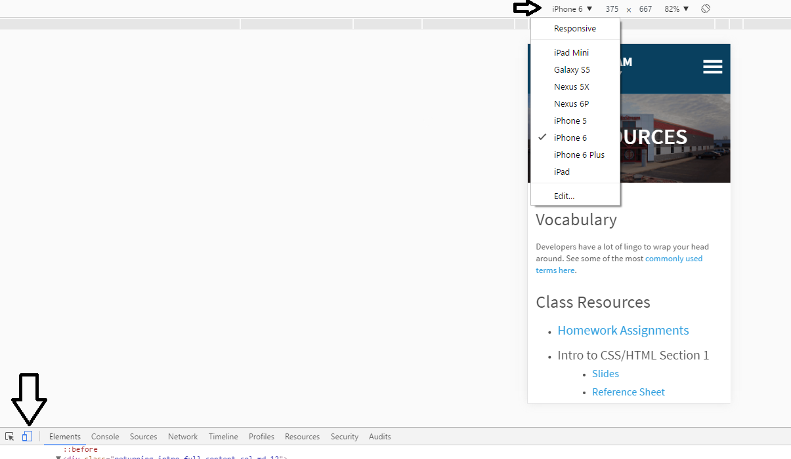

Advanced CSS
Quiz Part 1
This div will be centered on the screen - True or False?
div {
margin: 0 auto;
}
FALSE!div {
margin: 0 auto;
width: 200px;
}
You must set a width for the auto margin trick to work!
Quiz Part 2
What does this even mean?
div {
padding: 0 12px 5px 8px;
}
This div will have 0px of padding on the top, 12px of padding on the right, 5px of padding on the bottom, and 8px of padding on the left.
Quiz Part 3
With CSS how would you change the color of a link inside an unordered list inside an element with a class of "fidget-spinner" on it?
.fidget-spinner ul a { color: blurple; }Moving Stuff Around
Or how to use CSS positioning

Static Positioning
- HTML elements are positioned static by default.
- Static elements are positioned in the normal flow of the page
- Static elements ignore top, bottom, right or left property specifications.
Static Positioning
In normal flow, inline boxes flow from left to right, wrapping to next line when needed.
<img src="img/cookie1.png"/>
<img src="img/cookie2.png"/>
<img src="img/cookie3.png"/>
...
<img src="img/cookie2.png"/>
<img src="img/cookie3.png"/>

Static Positioning
In normal flow, block boxes flow from top to bottom, making a new line after every box.
<p>Greetings</p>
<p>Hello</p>
<p>Hi there!</p>
Greetings
Hello
Hi there!
Relative Positioning
- Takes the element out of the normal flow, allowing it to be moved to the top, left, right or bottom.
- Does not affect the elements surrounding it.
- Makes an element a "positioning context" in which to position other elements relative to it.
- Relative positioning and absolute positioning are used together.
Relative Positioning
The "relative" value will still put the element in the normal flow, but then offset it according to top/left/right/bottom properties.
.relative{
position: relative;
left: 80px;
top: 20px;
height: 100px;
background-color: yellow;
}
Absolute Positioning
- Positions element outside of the normal flow.
- An absolutely positioned element is offset from its container block, positioned relative.
- Its container block is the first element that has a position other than static.
- If no such element is found, the container block is <html>.
- Other elements act as if it's not there.
- Determined by its offset values in the properties top, bottom, right and left.
Absolute Positioning
The "absolute" value will take the element out of the normal flow and position it in relation to the window (or the closest non-static element).
.top{
position: absolute;
top: -40px;
right: 10px;
background-color: yellow
}
.bottom{
position: absolute;
bottom: -40px;
left:60px;
background-color: green
}
Example: Absolute Positioning
Here's an example of an image with a caption absolutely positioned over top of it.
The containing div has a position of relative, and the caption has a position of absolute.

Z-index
Sometimes elements overlap. You can change the order of overlapping with z-index. The element with highest z-index goes on top.
.bottom{
position: absolute;
bottom: 10px;
left:60px;
background-color: yellow;
}
.top{
position: absolute;
bottom: 15px;
left:60px;
background-color: green;
z-index: 2;
}
Enough Talk, Let's Code!
Let's add some positioning.
Let's create a div that contains an image and a caption, and position the caption absolutely overtop the image.
Putting Stuff into columns

no...not that kind. just...no.
Creating 2 Columns
To create 2 columns, each with 50% width, we only need 1 css class:
.column {
width: 50%;
float: left;
}
Now that we have this .column class we can wrap a div with that class around our content.
<div class="column">
<p>This is the left column</p>
</div>
<div class="column">
<p>This is the right column</p>
</div>
Enough Talk: Let's Code!
Try creating 2 columns in your site using floats.
Let's create a menu!
Go to http://www.bizstreamacademy.com and go to the Resources page.
At the bottom of the page, right click on the about.html and contact.html and choose 'Save link as...' in the dropdown. Then navigate to and save to your project folder.
Menu HTML
In your main index.html file add the following HTML inside or below your header HTML:
<nav id="menu">
<ul>
<li>
<a href="index.html">Home</a>
</li>
<li>
<a href="about.html">About</a>
</li>
<li>
<a href="contact.html">Contact</a>
</li>
</ul>
</nav>
The above code is the basic structure for most website menus. It utilizes the unordered list HTML and wraps it in a nav HTML5 tag.
Let's style that menu!
#menu {float: right;}
#menu ul {
list-style: none;
margin: 0;
padding: 0;
}
#menu ul li {float: left;}
#menu ul li a {
display: block;
font-size: 20px;
padding-left: 35px;
line-height: 65px;
}Our above CSS does 2 main things. First, it takes away the 'list' formatting that comes with an unordered list HTML element. Then it takes the li's and 'floats' them to the left (so they're all next to each other).
Enough Talk: Let's Code!
Take the next 5 minutes to work on your about or contact page. Or ask us any questions about how to edit the menu!
Responsive design
- OR -
You looked at your site on a cell phone and realize it looks terrible and now you need to fix it
What is a Media Query?
A media query is a way of specifying certain CSS at different screen widths.
@media only screen and (max-width: 750px) {
body {
background-color: blue;
}
}
The above code states "If the browser/device window is smaller than 750px, then the background color will change to blue."
Adding a mobile meta tag
In your HTML head, preferably at the top, but it can go anywhere in your head section.
We need this meta tag to optimize your website for mobile devices.
<meta name="viewport" content="width=device-width, initial-scale=1">
What does the mobile meta tag even mean?


Many mobile devices pretend they have more pixels than they actually do to acheive those super high resolution. This forces the site to display at the same width of the actual device.
In other words it makes it not look tiny and crappy.
Adding mobile styles
At the bottom of your CSS file, add the following code:
@media only screen and (max-width: 750px) {
body {
background-color: blue;
}
}
Resize your browser to see how your background color changes on a small screen.
Testing on "mobile" device
Changing Menu Styles on Mobile
Inside your media query, add the following CSS:
#menu ul li {
float: none;
}
#menu ul li a {
padding: 0;
line-height: 30px;
text-align: right;
}
We're adding this CSS because we want the menu items to appear 'stacked' in our mobile view and not all right next to each other.
Where do you go from here?

Questions?